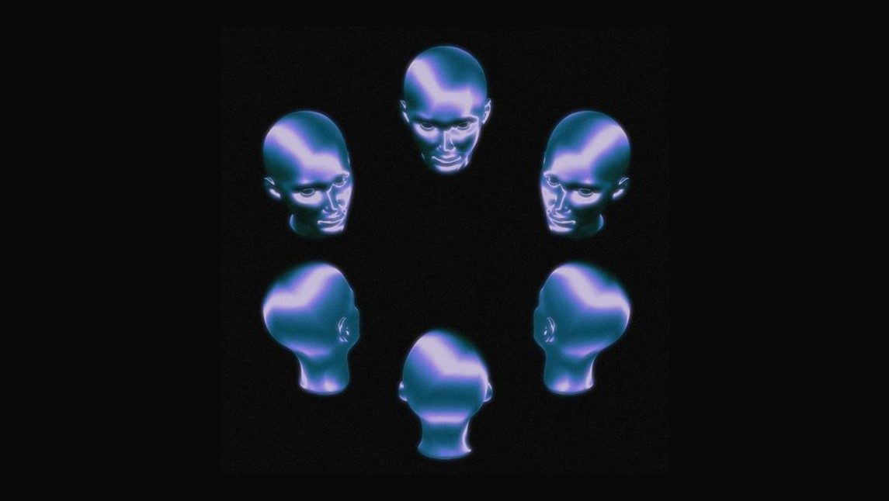

Nuestros átomos aparecen y desaparecen a altísimas frecuencias. Esa es la naturaleza de la materia. Es decir, también la materia tiene un comportamiento toroidal, en el sentido de que existe una parte expansiva (la aparición),y una parte contractiva (la desaparición), sucesivamente una tras de otra.
La Fuente es OMNIPRESENTE porque interactúa e intercambia información con cada átomo del universo. La Fuente no reside en un lugar en particular, sino que reside en todos los lugares simultáneamente. Es una paradoja muy poderosa.
En cada INSTANTE CUÁNTICO, nuestro cuerpo, como conjunto de átomos unidos coherentemente, también intercambia muchísima información, siguiendo una dinámica toroidal que rebota entre dos estados.
Durante el estado de EXPANSIÓN, la materia de mi cuerpo aparece y el entorno se mapea delante de mis sentidos. Y a través de mi percepción de las cosas, significo lo que veo, le doy un sentido, interpreto la realidad. Esa es la única parte donde tengo verdadera libertad de ELECCIÓN: la percepción subjetiva de lo que observo. La sola observación del escenario lo modifica.
Concluida la parte expansiva, comienza la etapa de CONTRACCIÓN, los átomos de mi cuerpo y del escenario desaparecen y se vuelven esencia. Entonces, mi conciencia informa a la Fuente cómo fue mi observación subjetiva. Dicho de otra manera, mi conciencia le reporta información a la Fuente, información que la Fuente toma y graba en una realidad continua, (conocida como el Akasha), que tiene la misma altísima definición que la realidad física percibida. El Akasha puede entenderse como la contraparte del plano de experimentación donde la conciencia está anclada.
Ahora bien, la percepción subjetiva de la conciencia que observa nunca está equilibrada, siempre tiene un componente de dualidad. Entonces, una vez que la Fuente grabó en el Akasha esta percepción subjetiva y dado que no puede quedar dualizada, realiza un balance de lo que le faltó a la conciencia para el equilibrio. Y la devuelve al plano de experimentación con ese pulso de balance, pulso que la conciencia percibirá como realidad exterior.
En otras palabras, la realidad exterior es el pulso de la Fuente que nos cuenta lo que nos faltó en el ciclo anterior para el equilibrio.
Este pulso de vida que intercambiamos con la Fuente se hace a través del vórtice energético del corazón. Según el Instituto de HeartMath, el corazón es el que primero recibe información desde el exterior y luego es elevada al cerebro. Es en ese traslado que el individuo polariza la información e interpreta subjetivamente. ¡Es muy necesario estar siempre conectado al corazón!